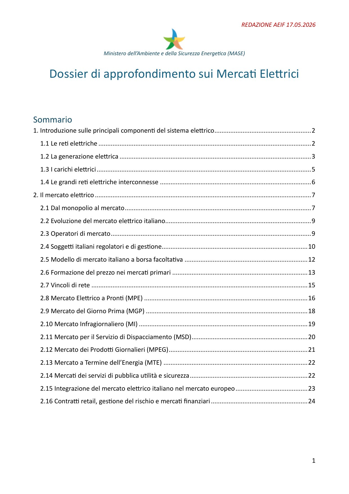

Pagina 1
Indice

Testo completo della pagina 1
REDAZIONE AEIF 17.05.2026
Ministero dell’Ambiente e della Sicurezza Energetica (MASE)
Dossier di approfondimento sui Mercati Elettrici
Sommario
1. Introduzione sulle principali componenti del sistema elettrico ....................................................... 2
1.1 Le reti elettriche ......................................................................................................................... 2
1.2 La generazione elettrica ............................................................................................................. 3
1.3 I carichi elettrici .......................................................................................................................... 5
1.4 Le grandi reti elettriche interconnesse ...................................................................................... 6
2. Il mercato elettrico ........................................................................................................................... 7
2.1 Dal monopolio al mercato .......................................................................................................... 7
2.2 Evoluzione del mercato elettrico italiano................................................................................... 9
2.3 Operatori di mercato .................................................................................................................. 9
2.4 Soggetti italiani regolatori e di gestione................................................................................... 10
2.5 Modello di mercato italiano a borsa facoltativa ...................................................................... 12
2.6 Formazione del prezzo nei mercati primari ............................................................................. 13
2.7 Vincoli di rete ........................................................................................................................... 15
2.8 Mercato Elettrico a Pronti (MPE) ............................................................................................. 16
2.9 Mercato del Giorno Prima (MGP) ............................................................................................ 18
2.10 Mercato Infragiornaliero (MI) ................................................................................................ 19
2.11 Mercato per il Servizio di Dispacciamento (MSD) .................................................................. 20
2.12 Mercato dei Prodotti Giornalieri (MPEG) ............................................................................... 21
2.13 Mercato a Termine dell’Energia (MTE) .................................................................................. 22
2.14 Mercati dei servizi di pubblica utilità e sicurezza ................................................................... 22
2.15 Integrazione del mercato elettrico italiano nel mercato europeo ......................................... 23
2.16 Contratti retail, gestione del rischio e mercati finanziari ....................................................... 24
1